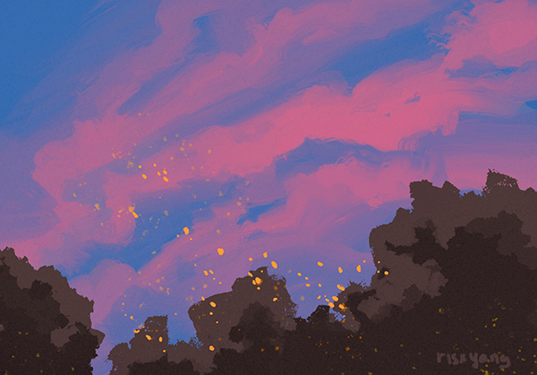
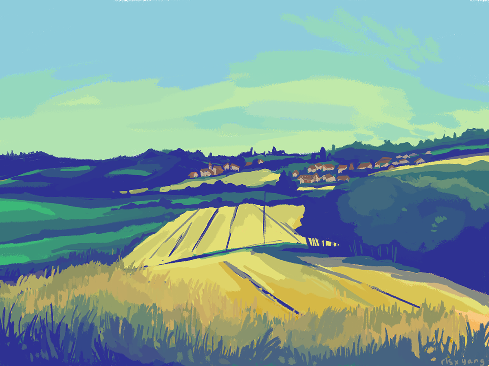
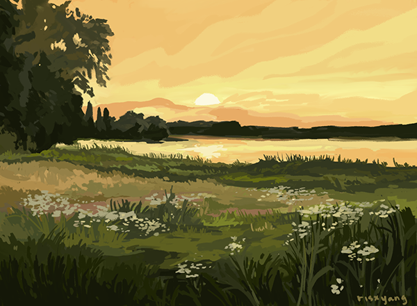
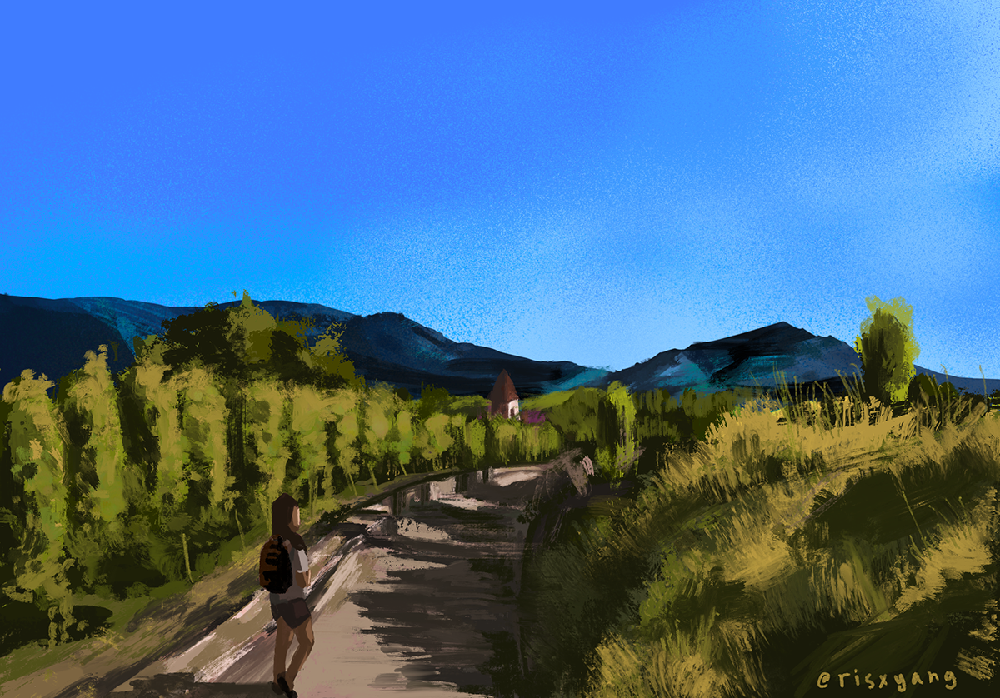
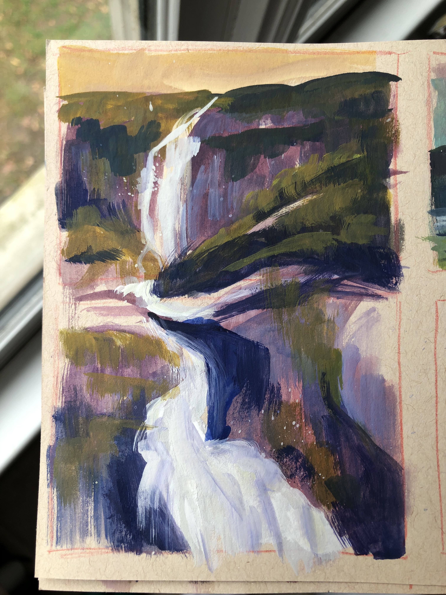
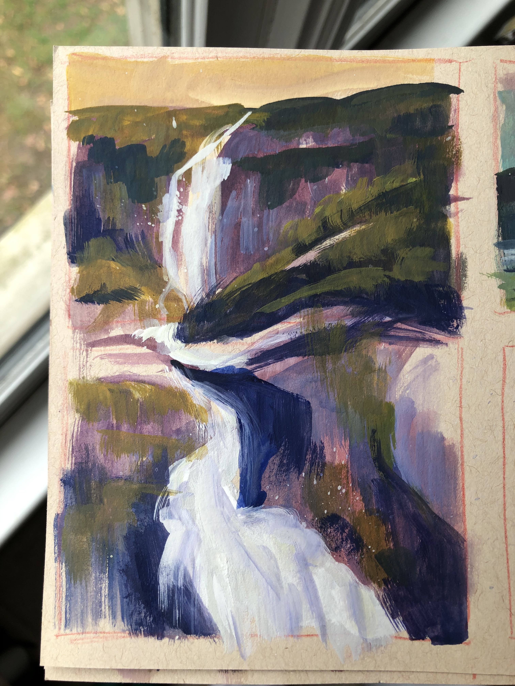
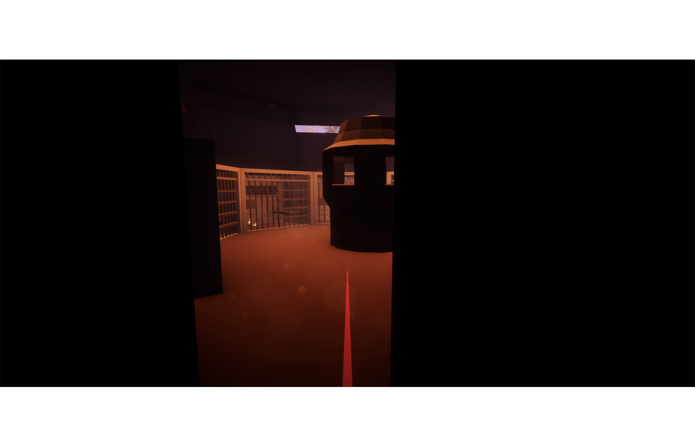
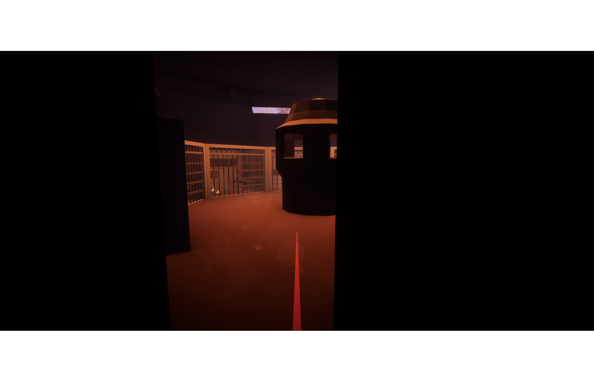
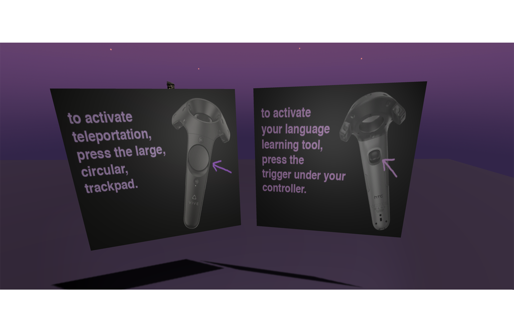
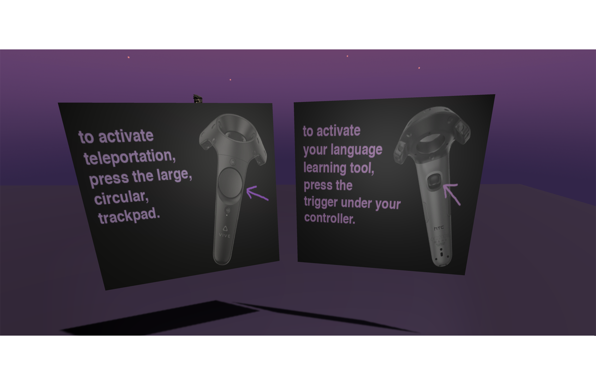

2021 pixar undergraduate program demo reel
Christine Yang
Link to Cover Letter
till human voices wake us
materials: printmaking w/ laser etched acrylic, graphite, watercolor, cut+collage. fragments of "the love song of J Alfred Prufrock" by TS Eliot.view full image
{kind=link}


--scape
light projection. materials: paper sculpture, masking layers in photoshop, projector


collections
a stop motion project. made with found materials at home: cuttings from early 2000s magazines, xacto knife, iPhone camera.




digital landscape paintings
painted in photoshop with wacom intuous tablet, and procreate with iPad; reference photos shot by me
gouache landscape studies < 5 minutes each
materials: strathmore mixed media toned-tan sketchbook, holbein watercolor, winsor & newton gouache
 

gouache landscape studies < 10 minutes each
materials: strathmore mixed media toned-tan sketchbook, holbein watercolor, winsor & newton gouache

VR Experience for Introductory Spanish Students
Built in Unity3D, with use of Blender for creating environmental assets. As one of three undergraduate developers on the technical side of the project, I had a main role in choosing and creating visual assets, lighting the scene, and writing C# scripts to control player interaction in the experience. The premise, involving a political figure's prison break in the Spanish Civil War, was developed by professors at SCSU.
GIF showcases a prototype of the visual feel of an interaction with a character in the scene. I integrated animations from Mixamo into the animation timeline in our Unity project and controlled the basic lighting in this scene; I also researched available visual assets on the Unity store and made a pitch for the low-poly aesthetic.
 

 

scenes from the experience
among other things, I was responsible for creating informational panels in the scene and building scenes in which the player could interact with NPCs.